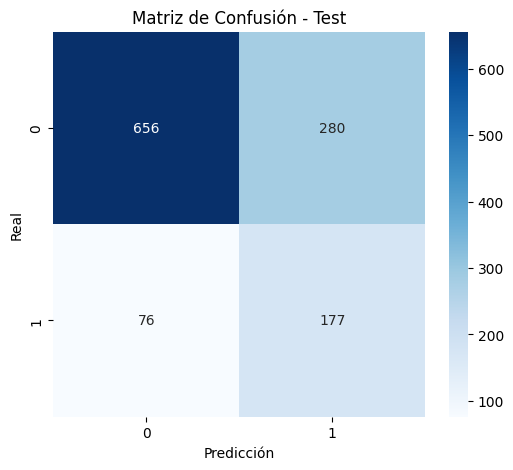
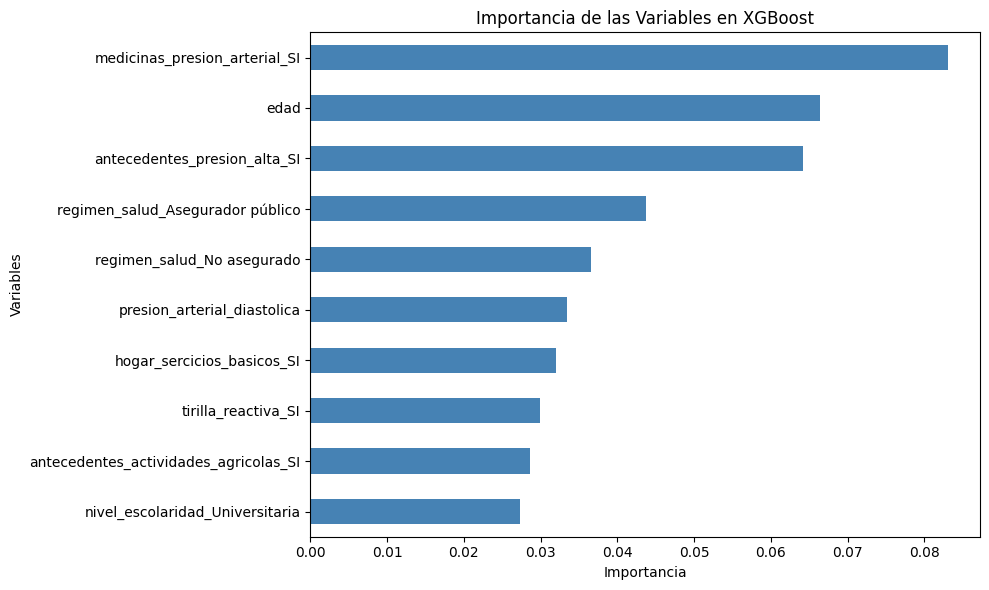
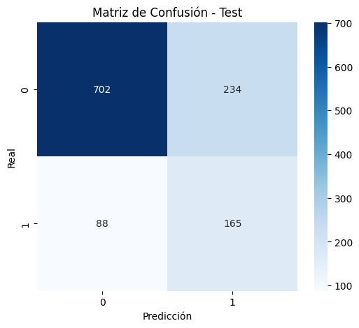

XGBoost#
Librerías#
import warnings
import numpy as np
import pandas as pd
import seaborn as sns
import matplotlib.pyplot as plt
warnings.filterwarnings("ignore")
from sklearn.metrics import *
from sklearn.ensemble import *
from sklearn.pipeline import *
from xgboost import XGBClassifier
from sklearn.preprocessing import *
from sklearn.model_selection import *
from sklearn.feature_selection import *
Data#
df = pd.read_excel("../data/processed/df_to_model_frenel_15102025.xlsx")
df.head()
| target_tfg | pais_encuesta | grupo_origen | pais_nacimiento | edad | genero | grupo_etnico | nivel_escolaridad | regimen_salud | ocupacion | ... | hacinamiento_hogar | hogar_migrantes | grupo_origen_ingles | ocupacion_agricola | imc | clasificacion_imc | grupo_edad | clasificacion_tfg | clasificacion_pa | creatinina_elevada | |
|---|---|---|---|---|---|---|---|---|---|---|---|---|---|---|---|---|---|---|---|---|---|
| 0 | 0 | COLOMBIA | AFRODESCENDIENTE | COLOMBIA | 49 | Femenino | AFRODESCENDIENTE | Primaria | Asegurador público | Comerciante | ... | NO | NO | AFRODESCENDANT | NO | 32.326531 | Obesidad | 41-50 | Ligera (60-89) | Hipertensión grado 2 (moderada) | False |
| 1 | 1 | COLOMBIA | AFRODESCENDIENTE | COLOMBIA | 83 | Femenino | AFRODESCENDIENTE | No escolarizado | Asegurador privado | Desempleado | ... | NO | NO | AFRODESCENDANT | NO | 22.206331 | Normal | 60+ | Leve Moderada (45-59) | Normal-alta | True |
| 2 | 0 | COLOMBIA | AFRODESCENDIENTE | COLOMBIA | 70 | Femenino | AFRODESCENDIENTE | No escolarizado | Asegurador público | Comerciante | ... | SI | NO | AFRODESCENDANT | NO | 20.820940 | Normal | 60+ | Ligera (60-89) | Hipertensión grado 2 (moderada) | False |
| 3 | 0 | COLOMBIA | AFRODESCENDIENTE | COLOMBIA | 25 | Femenino | AFRODESCENDIENTE | Técnica | Asegurador público | Comerciante | ... | NO | NO | AFRODESCENDANT | NO | 23.738662 | Normal | 18-30 | Ligera (60-89) | Normal | True |
| 4 | 1 | COLOMBIA | AFRODESCENDIENTE | COLOMBIA | 64 | Femenino | AFRODESCENDIENTE | Primaria | Asegurador público | Desempleado | ... | NO | NO | AFRODESCENDANT | NO | 19.257029 | Normal | 60+ | Leve Moderada (45-59) | Normal | True |
5 rows × 57 columns
Preprocesamiento#
Selección de Variables#
data_modelo = df.drop(columns=['pais_encuesta', 'pais_nacimiento', 'ocupacion', 'georeferenciacion', 'grupo_origen_ingles', 'tasa_filtracion_glomerular'])
data_modelo_numericas= data_modelo.drop(columns = ['clasificacion_imc', 'grupo_edad', 'clasificacion_tfg', 'clasificacion_pa', 'creatinina_elevada', 'creatinina', 'grupo_origen',
'diabetes_durante_embarazo'])
data_modelo_categoricas = data_modelo.drop(columns = ['peso', 'grupo_edad', 'talla', 'presion_arterial_sistolica', 'presion_arterial_diastolica', 'creatinina', 'imc'])
Codificación Variables Categóricas#
cat_cols = data_modelo_numericas.select_dtypes(include=['object']).columns
num_cols = data_modelo_numericas.select_dtypes(include=['int64', 'float64']).columns
print("Categóricas:", len(cat_cols))
print("Numéricas:", len(num_cols))
Categóricas: 36
Numéricas: 7
df_encoded = pd.get_dummies(data_modelo_numericas, columns=cat_cols, drop_first=True)
Modelos#
Conjuntos de Train y Test#
X = df_encoded.drop('target_tfg', axis=1)
y = df_encoded['target_tfg']
X_train, X_test, y_train, y_test = train_test_split(X, y, stratify=y, random_state=42)
print(f' X_train.shape: {X_train.shape}\n X_test.shape: {X_test.shape}\n y_train.shape: {y_train.shape}\n y_test.shape: {y_test.shape}')
X_train.shape: (3567, 60)
X_test.shape: (1189, 60)
y_train.shape: (3567,)
y_test.shape: (1189,)
Modelo 1: Recall#
Implementación Modelo#
# Calcular ratio para scale_pos_weight = (N_negativos / N_positivos)
ratio = (y_train == 0).sum() / (y_train == 1).sum()
xgb = XGBClassifier(objective='binary:logistic',eval_metric='logloss', scale_pos_weight=ratio, # ¡MUY IMPORTANTE para desbalance!
random_state=11,use_label_encoder=False)
param_grid = {
'n_estimators': [200, 300],
'max_depth': [3, 5, 7],
'learning_rate': [0.01, 0.1],
'subsample': [0.7, 1.0],
'colsample_bytree': [0.7, 1.0],
'gamma': [0, 1]
}
grid_xgb = GridSearchCV(
estimator=xgb,
param_grid=param_grid,
scoring=make_scorer(recall_score), # Optimiza detección de la clase 1
cv=5, # Estratifica automáticamente al ser clasificación
n_jobs=-1,
verbose=2
)
grid_xgb.fit(X_train, y_train)
Fitting 5 folds for each of 96 candidates, totalling 480 fits
GridSearchCV(cv=5,
estimator=XGBClassifier(base_score=None, booster=None,
callbacks=None, colsample_bylevel=None,
colsample_bynode=None,
colsample_bytree=None, device=None,
early_stopping_rounds=None,
enable_categorical=False,
eval_metric='logloss', feature_types=None,
feature_weights=None, gamma=None,
grow_policy=None, importance_type=None,
interaction_constraint...
max_leaves=None, min_child_weight=None,
missing=nan, monotone_constraints=None,
multi_strategy=None, n_estimators=None,
n_jobs=None, num_parallel_tree=None, ...),
n_jobs=-1,
param_grid={'colsample_bytree': [0.7, 1.0], 'gamma': [0, 1],
'learning_rate': [0.01, 0.1], 'max_depth': [3, 5, 7],
'n_estimators': [200, 300], 'subsample': [0.7, 1.0]},
scoring=make_scorer(recall_score, response_method='predict'),
verbose=2)In a Jupyter environment, please rerun this cell to show the HTML representation or trust the notebook. On GitHub, the HTML representation is unable to render, please try loading this page with nbviewer.org.
Parameters
| estimator | XGBClassifier...ree=None, ...) | |
| param_grid | {'colsample_bytree': [0.7, 1.0], 'gamma': [0, 1], 'learning_rate': [0.01, 0.1], 'max_depth': [3, 5, ...], ...} | |
| scoring | make_scorer(r...hod='predict') | |
| n_jobs | -1 | |
| refit | True | |
| cv | 5 | |
| verbose | 2 | |
| pre_dispatch | '2*n_jobs' | |
| error_score | nan | |
| return_train_score | False |
XGBClassifier(base_score=None, booster=None, callbacks=None,
colsample_bylevel=None, colsample_bynode=None,
colsample_bytree=0.7, device=None, early_stopping_rounds=None,
enable_categorical=False, eval_metric='logloss',
feature_types=None, feature_weights=None, gamma=1,
grow_policy=None, importance_type=None,
interaction_constraints=None, learning_rate=0.01, max_bin=None,
max_cat_threshold=None, max_cat_to_onehot=None,
max_delta_step=None, max_depth=3, max_leaves=None,
min_child_weight=None, missing=nan, monotone_constraints=None,
multi_strategy=None, n_estimators=300, n_jobs=None,
num_parallel_tree=None, ...)Parameters
| objective | 'binary:logistic' | |
| base_score | None | |
| booster | None | |
| callbacks | None | |
| colsample_bylevel | None | |
| colsample_bynode | None | |
| colsample_bytree | 0.7 | |
| device | None | |
| early_stopping_rounds | None | |
| enable_categorical | False | |
| eval_metric | 'logloss' | |
| feature_types | None | |
| feature_weights | None | |
| gamma | 1 | |
| grow_policy | None | |
| importance_type | None | |
| interaction_constraints | None | |
| learning_rate | 0.01 | |
| max_bin | None | |
| max_cat_threshold | None | |
| max_cat_to_onehot | None | |
| max_delta_step | None | |
| max_depth | 3 | |
| max_leaves | None | |
| min_child_weight | None | |
| missing | nan | |
| monotone_constraints | None | |
| multi_strategy | None | |
| n_estimators | 300 | |
| n_jobs | None | |
| num_parallel_tree | None | |
| random_state | 11 | |
| reg_alpha | None | |
| reg_lambda | None | |
| sampling_method | None | |
| scale_pos_weight | np.float64(3.7058047493403694) | |
| subsample | 1.0 | |
| tree_method | None | |
| validate_parameters | None | |
| verbosity | None | |
| use_label_encoder | False |
Métricas y Resultados#
best_xgb = grid_xgb.best_estimator_
print("Mejores Hiperparámetros:", grid_xgb.best_params_)
print("Mejor Recall (CV):", grid_xgb.best_score_)
# Predicciones en train y test
y_train_pred = best_xgb.predict(X_train)
y_test_pred = best_xgb.predict(X_test)
print("\n RECALL en Train:", recall_score(y_train, y_train_pred))
print("\n RECALL en Test:", recall_score(y_test, y_test_pred))
print("\nReporte en Test:")
print(classification_report(y_test, y_test_pred))
Mejores Hiperparámetros: {'colsample_bytree': 0.7, 'gamma': 1, 'learning_rate': 0.01, 'max_depth': 3, 'n_estimators': 300, 'subsample': 1.0}
Mejor Recall (CV): 0.6438044614848379
RECALL en Train: 0.7084432717678101
RECALL en Test: 0.6996047430830039
Reporte en Test:
precision recall f1-score support
0 0.90 0.70 0.79 936
1 0.39 0.70 0.50 253
accuracy 0.70 1189
macro avg 0.64 0.70 0.64 1189
weighted avg 0.79 0.70 0.73 1189
cm = confusion_matrix(y_test, y_test_pred)
plt.figure(figsize=(6, 5))
sns.heatmap(cm, annot=True, fmt='d', cmap='Blues') # Paleta azul
plt.title("Matriz de Confusión - Test")
plt.xlabel("Predicción")
plt.ylabel("Real")
plt.show()

best_xgb = grid_xgb.best_estimator_
importances = pd.Series(best_xgb.feature_importances_, index=X_train.columns)
importances = importances.sort_values(ascending=True)
top_n = 10
plt.figure(figsize=(10, 6))
importances.tail(top_n).plot(kind='barh', color='steelblue')
plt.title('Importancia de las Variables en XGBoost')
plt.xlabel('Importancia')
plt.ylabel('Variables')
plt.tight_layout()
plt.show()

Modelo 2: F1-Score#
Implementación Modelo#
# Calcular ratio para scale_pos_weight = (N_negativos / N_positivos)
ratio = (y_train == 0).sum() / (y_train == 1).sum()
xgb = XGBClassifier(objective='binary:logistic',eval_metric='logloss', scale_pos_weight=ratio, # ¡MUY IMPORTANTE para desbalance!
random_state=11,use_label_encoder=False)
param_grid = {
'n_estimators': [200, 300],
'max_depth': [3, 5, 7],
'learning_rate': [0.01, 0.1],
'subsample': [0.7, 1.0],
'colsample_bytree': [0.7, 1.0],
'gamma': [0, 1]
}
grid_xgb = GridSearchCV(
estimator=xgb,
param_grid=param_grid,
scoring=make_scorer(f1_score), # Optimiza detección de la clase 1
cv=5, # Estratifica automáticamente al ser clasificación
n_jobs=-1,
verbose=2
)
grid_xgb.fit(X_train, y_train)
Fitting 5 folds for each of 96 candidates, totalling 480 fits
GridSearchCV(cv=5,
estimator=XGBClassifier(base_score=None, booster=None,
callbacks=None, colsample_bylevel=None,
colsample_bynode=None,
colsample_bytree=None, device=None,
early_stopping_rounds=None,
enable_categorical=False,
eval_metric='logloss', feature_types=None,
feature_weights=None, gamma=None,
grow_policy=None, importance_type=None,
interaction_constraint...
max_leaves=None, min_child_weight=None,
missing=nan, monotone_constraints=None,
multi_strategy=None, n_estimators=None,
n_jobs=None, num_parallel_tree=None, ...),
n_jobs=-1,
param_grid={'colsample_bytree': [0.7, 1.0], 'gamma': [0, 1],
'learning_rate': [0.01, 0.1], 'max_depth': [3, 5, 7],
'n_estimators': [200, 300], 'subsample': [0.7, 1.0]},
scoring=make_scorer(f1_score, response_method='predict'),
verbose=2)In a Jupyter environment, please rerun this cell to show the HTML representation or trust the notebook. On GitHub, the HTML representation is unable to render, please try loading this page with nbviewer.org.
Parameters
| estimator | XGBClassifier...ree=None, ...) | |
| param_grid | {'colsample_bytree': [0.7, 1.0], 'gamma': [0, 1], 'learning_rate': [0.01, 0.1], 'max_depth': [3, 5, ...], ...} | |
| scoring | make_scorer(f...hod='predict') | |
| n_jobs | -1 | |
| refit | True | |
| cv | 5 | |
| verbose | 2 | |
| pre_dispatch | '2*n_jobs' | |
| error_score | nan | |
| return_train_score | False |
XGBClassifier(base_score=None, booster=None, callbacks=None,
colsample_bylevel=None, colsample_bynode=None,
colsample_bytree=0.7, device=None, early_stopping_rounds=None,
enable_categorical=False, eval_metric='logloss',
feature_types=None, feature_weights=None, gamma=1,
grow_policy=None, importance_type=None,
interaction_constraints=None, learning_rate=0.1, max_bin=None,
max_cat_threshold=None, max_cat_to_onehot=None,
max_delta_step=None, max_depth=3, max_leaves=None,
min_child_weight=None, missing=nan, monotone_constraints=None,
multi_strategy=None, n_estimators=200, n_jobs=None,
num_parallel_tree=None, ...)Parameters
| objective | 'binary:logistic' | |
| base_score | None | |
| booster | None | |
| callbacks | None | |
| colsample_bylevel | None | |
| colsample_bynode | None | |
| colsample_bytree | 0.7 | |
| device | None | |
| early_stopping_rounds | None | |
| enable_categorical | False | |
| eval_metric | 'logloss' | |
| feature_types | None | |
| feature_weights | None | |
| gamma | 1 | |
| grow_policy | None | |
| importance_type | None | |
| interaction_constraints | None | |
| learning_rate | 0.1 | |
| max_bin | None | |
| max_cat_threshold | None | |
| max_cat_to_onehot | None | |
| max_delta_step | None | |
| max_depth | 3 | |
| max_leaves | None | |
| min_child_weight | None | |
| missing | nan | |
| monotone_constraints | None | |
| multi_strategy | None | |
| n_estimators | 200 | |
| n_jobs | None | |
| num_parallel_tree | None | |
| random_state | 11 | |
| reg_alpha | None | |
| reg_lambda | None | |
| sampling_method | None | |
| scale_pos_weight | np.float64(3.7058047493403694) | |
| subsample | 0.7 | |
| tree_method | None | |
| validate_parameters | None | |
| verbosity | None | |
| use_label_encoder | False |
Métricas y Resultados#
best_xgb = grid_xgb.best_estimator_
print("Mejores Hiperparámetros:", grid_xgb.best_params_)
print("Mejor Recall (CV):", grid_xgb.best_score_)
# Predicciones en train y test
y_train_pred = best_xgb.predict(X_train)
y_test_pred = best_xgb.predict(X_test)
print("\n RECALL en Train:", recall_score(y_train, y_train_pred))
print("\n RECALL en Test:", recall_score(y_test, y_test_pred))
print("\nReporte en Test:")
print(classification_report(y_test, y_test_pred))
Mejores Hiperparámetros: {'colsample_bytree': 0.7, 'gamma': 1, 'learning_rate': 0.1, 'max_depth': 3, 'n_estimators': 200, 'subsample': 0.7}
Mejor Recall (CV): 0.48363123576356515
RECALL en Train: 0.8509234828496042
RECALL en Test: 0.6521739130434783
Reporte en Test:
precision recall f1-score support
0 0.89 0.75 0.81 936
1 0.41 0.65 0.51 253
accuracy 0.73 1189
macro avg 0.65 0.70 0.66 1189
weighted avg 0.79 0.73 0.75 1189
cm = confusion_matrix(y_test, y_test_pred)
plt.figure(figsize=(6, 5))
sns.heatmap(cm, annot=True, fmt='d', cmap='Blues') # Paleta azul
plt.title("Matriz de Confusión - Test")
plt.xlabel("Predicción")
plt.ylabel("Real")
plt.show()
